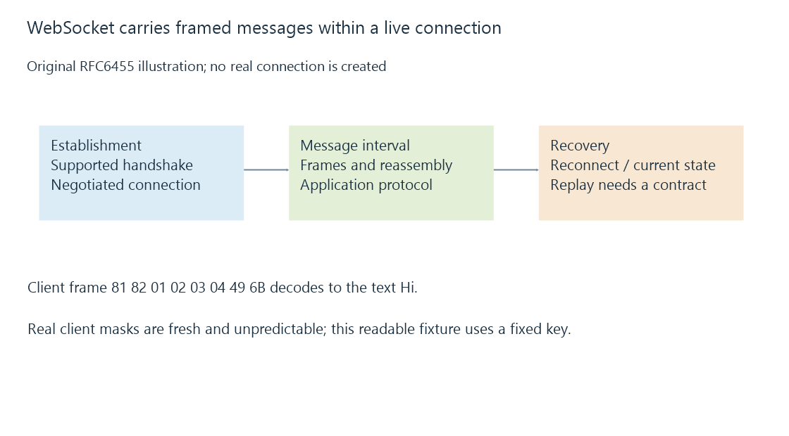

WebSockets and a continuing message connection
WebSocket carries framed messages over a continuing connection, with message boundaries and reconnection state separate from individual network reads.
WebSocket provides a continuing, two-way message connection. After the supported connection establishment, either side can send messages without making each message a separate HTTP request.
For an Emby-related integration, that can support timely state updates. The transport still needs an application protocol defining which messages mean what.
Establishment and messages are different phases
The RFC 6455 HTTP/1.1 arrangement uses an opening handshake that upgrades the connection. A successful switching response establishes the negotiated WebSocket connection; it does not by itself authenticate every claimed application identity.

A secure WebSocket connection uses wss. A browser's origin and secure-page rules can affect whether it is allowed to establish a particular connection. These are separate from the server's application permissions.
A frame encodes a message part
An original tiny client-to-server text frame contains “Hi”:
81 82 01 02 03 04 49 6B
81: FIN=1, text opcode=1
82: MASK=1, payload length=2
Mask key: 01 02 03 04
Decoded payload:
49 XOR 01 = 48 ("H")
6B XOR 02 = 69 ("i")
The fixed key is for the readable example. RFC 6455 requires a fresh unpredictable masking key for actual client frames. Masking serves the protocol's transport protections; it is not encryption.
The simple frame uses one complete message. Larger messages can be fragmented over frames, and control frames have their own rules.
A network read is not a message
TCP can return part of a frame or several frames in one read. The WebSocket implementation must parse and reassemble according to frame and message boundaries.
A caller should therefore use the supported message API rather than assuming each low-level receive corresponds to one JSON event. A text message also has encoding requirements before its content is interpreted by the application.
Reconnecting restores a channel, not history
If a connection is absent from time T1 to T2, it cannot carry ordinary live messages during that interval. Reconnection creates a new delivery opportunity.
Replay, sequence tracking and current-state queries are application capabilities. They are not universal effects of reopening a WebSocket. If an Emby integration needs current playback state after reconnect, its supported recovery path should obtain that state rather than treating silence during the outage as proof that nothing changed.
See Also
- Polling for updates and observation intervals
- Event delivery, retries and duplicate processing
- Mixed content and a browser’s secure-page boundary